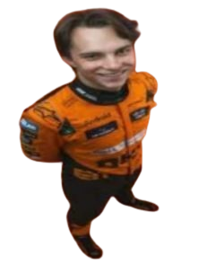

Bem-vindo ao F64 Bit! Neste jogo de corrida 2D, seu objetivo é ultrapassar os oponentes sem colidir com eles para marcar pontos e continuar na corrida o maior tempo possível.
Controles
A: Move o carro para a esquerda
D: Move o carro para a direita
Regras do Jogo
O jogador controla um carro de Fórmula 1 que se move apenas para a esquerda e para a direita.
Existem três oponentes na pista ao mesmo tempo.
Se o jogador ultrapassar um oponente sem colidir, ganha 1 ponto de ultrapassagem.
Se o jogador colidir com um oponente, perde 1 ponto de vida.
O jogador inicia com um determinado número de vidas. Quando todas as vidas se esgotarem, o jogo termina.
Aparecem engrenagens na pista de tempos em tempos. Se o jogador pegar uma, ganha 1 ponto de vida.
